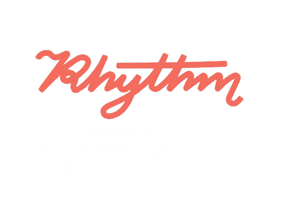
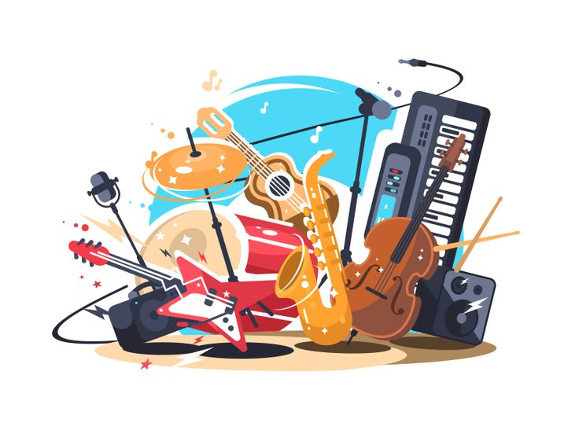
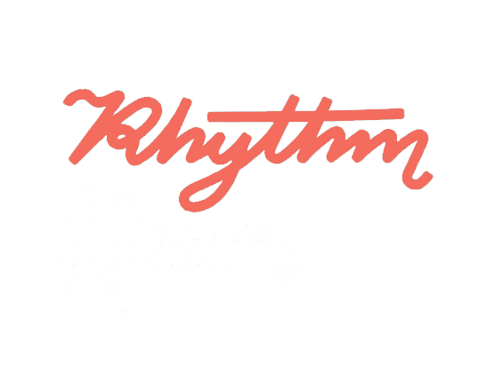
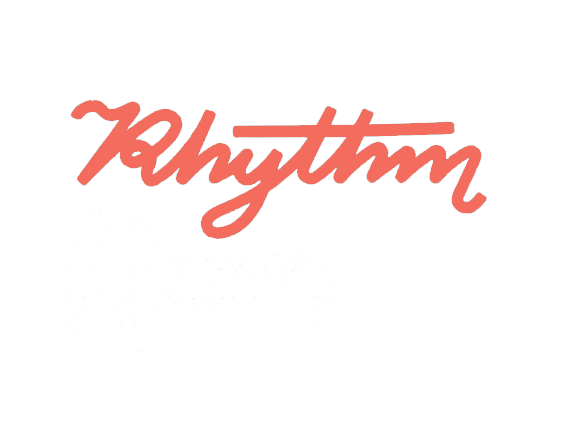
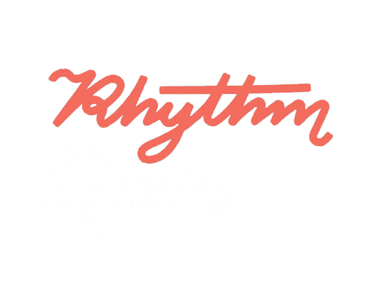
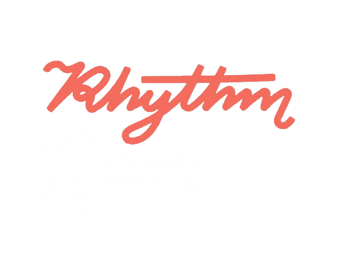

Inicio
Músicas
Listas
Artistas
Tu Puerta a la Música
Moderna
Descubre, disfruta y conecta con la música en
RhythmicRoom
.
¡Comienza ahora!

Temas en Alza del Último Año
Top Albums
Explora Músicas
Listas de Reproducción
Descubre Artistas
 


